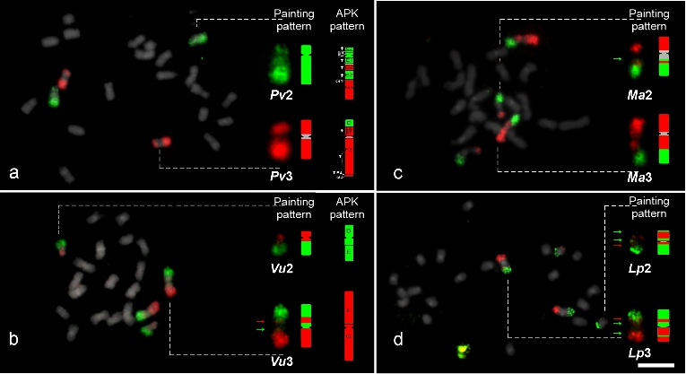

Post 1#: Meu primeiro artigo do Doutorado foi publicado
No dia 18 de junho de 2022, meu primeiro artigo do doutorado, intitulado "Comparative cytogenomics reveals genome reshuffling and centromere repositioning in the legume tribe Phaseoleae", foi publicado na Chromosome Research. Neste artigo, realizei uma análise comparativa entre os genomas de vários feijões cultivados, utilizando o pipeline CoGe SynMap, possibilitando a inferência do cariótipo ancestral da tribo Phaseoleae (Ancestral Phaseoleae Karyotype). Essas análises revelaram que remodulação genomica e reposicionamento centromérico foram constantes durante a evolução dessa tribo. Você pode conferir o meu artigo aqui. Para mais informações, você pode me contatar por e-mail.